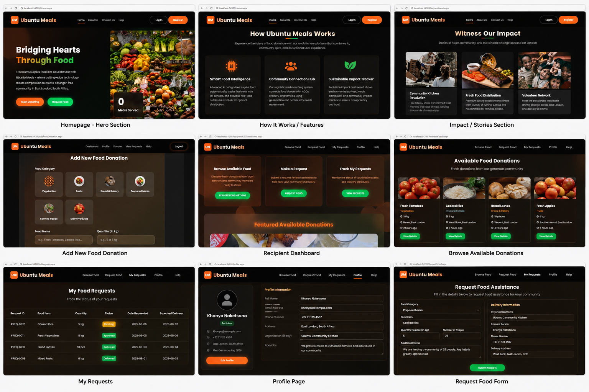
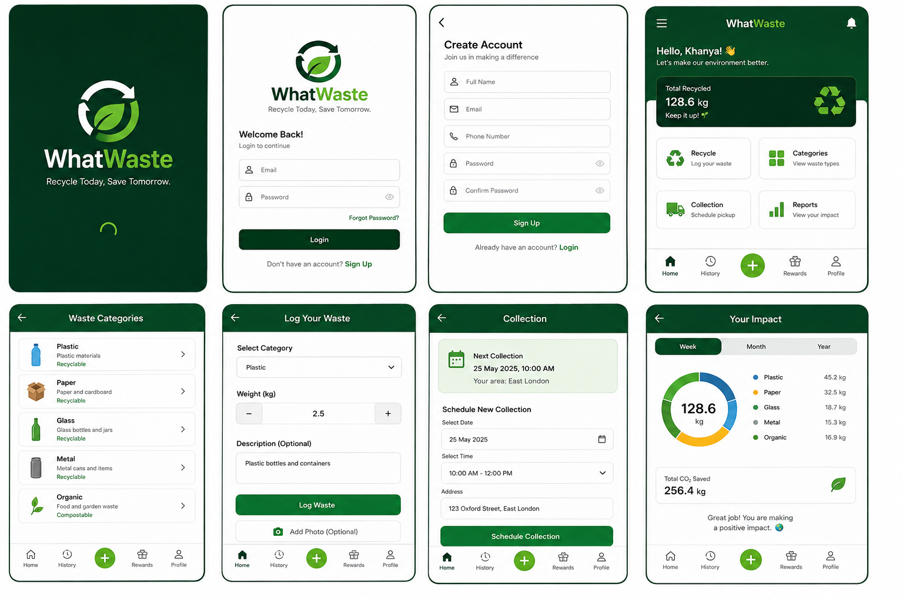
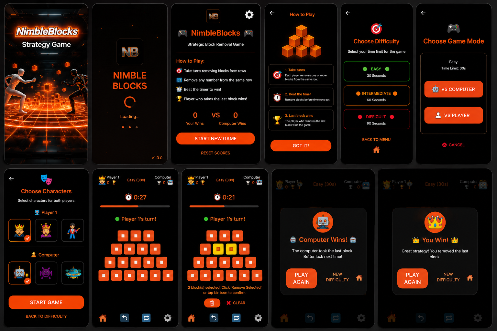
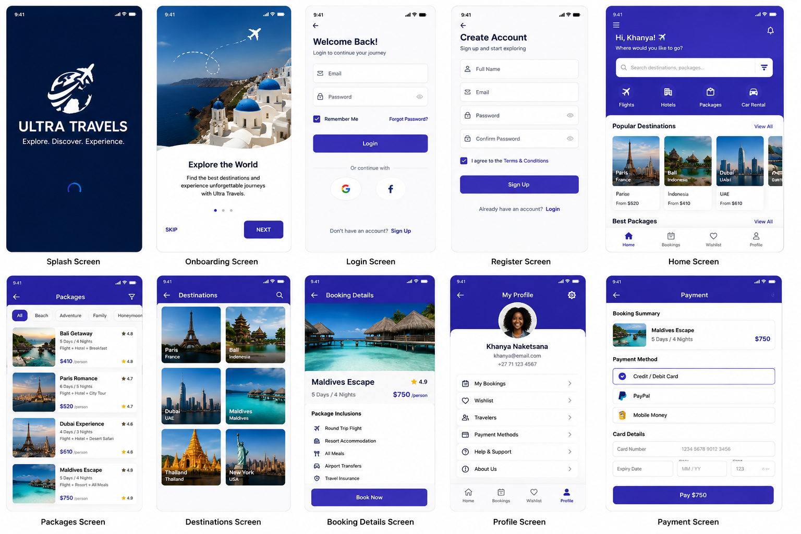

01
Software Development
Building practical applications across web, desktop and mobile environments using modern development technologies.
HELLO, I'M
INFORMATION SYSTEMS · SOFTWARE DEVELOPMENT · DATA
I'm an Information Systems graduate and Honours student who enjoys turning ideas and real-world problems into practical technology solutions. My projects span web, desktop and mobile development, while my academic interests extend into data, governance and emerging technologies.
WHAT I DO
I combine technical knowledge, systems thinking and problem-solving to create practical digital solutions.
Building practical applications across web, desktop and mobile environments using modern development technologies.
Applying systems analysis, design and technology to understand problems and develop solutions that support real organisational needs.
Exploring databases, data governance and emerging technologies to understand how information can support better decisions.
SELECTED WORK
A selection of projects that reflect my experience building practical solutions across different technologies and platforms.

A food donation and distribution platform connecting donors, NGOs and volunteers to help redistribute surplus food to communities in need.

A waste management and recycling platform designed to support waste-related activities, user interaction and system management.

A strategic mobile block-removal game featuring multiple difficulty levels, player and computer modes, character selection, timed gameplay and score tracking.

A desktop travel booking system supporting travel-related services including flight, hotel and car bookings.
ABOUT ME
I'm curious about how technology can be used to solve real problems.
My journey in Information Systems has given me exposure to software development, systems analysis, database management and emerging technologies. I enjoy learning by building and turning ideas into practical digital solutions.
Alongside my technical development, my experience as a student tutor has strengthened my ability to communicate technical concepts, collaborate with others and approach problems from different perspectives.
I believe the strongest technical skills are developed by experimenting, creating and solving real problems.
Information Systems has taught me to consider people, processes, data and technology together.
TECHNICAL TOOLKIT
A growing toolkit shaped by academic work, personal projects and hands-on development.
EXPERIENCE
Supporting students in understanding concepts related to emerging technologies while developing communication and technical explanation skills.
Helping students engage with systems analysis concepts and strengthening my ability to communicate technical ideas clearly.
Supporting students with database-related concepts while strengthening my own understanding of data and database management.
Developed professional experience in a healthcare support environment, strengthening attention to detail, professionalism and teamwork.
MILESTONES
Recognised for developing an innovative technology solution in a competitive hackathon environment.
Completed a Full Stack Development programme focused on practical software development skills.
Received a Certificate of Appreciation recognising hard work and professionalism.
RESEARCH & ACADEMIC INTERESTS
My academic interests extend beyond software development into the role of information, data and governance in technology-driven decision-making.
Understanding how data can support evidence-based decisions.
Exploring responsible and effective management of data.
Connecting information and technology to meaningful outcomes.
LET'S CONNECT
I'm interested in opportunities where I can continue learning, contribute my skills and build meaningful technology solutions.
Johannesburg, Gauteng, South Africa